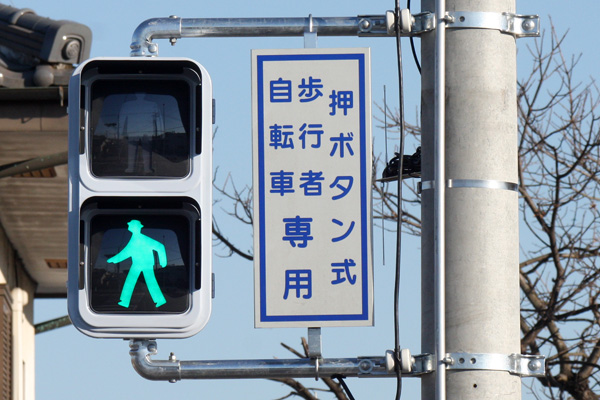
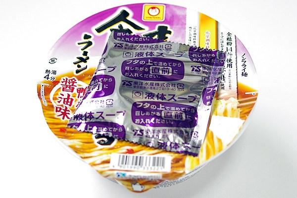
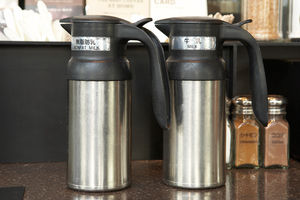
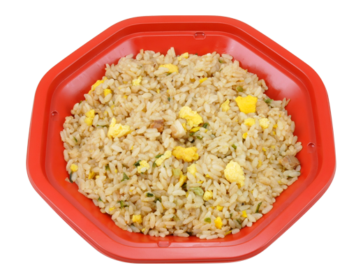

Speaking of New York, White lights on the traffic lights shows that you can go across a cross walk in front. Red has ofcourse the opposite meaning. There is green and red lights in Japan however people call green lights usually blue. Why is it? The answer is not understand at a world wide range because of a peculiar culture coming from the old Japan. We has described the color from green to blue as blue. For instance, green apples have been called as "Ao(blue) - Ringo(apple)" in Japanese
I found out that there is the difference how to cook the japanese instant noodles with the liquid soup packed at out of Japan. The recommendation of the company is as follows. First, you open the package and put the ingreguent over the noodle with no liquid soup and put boiled water. Next stops, you close the top and put the liquid soup bag onto the cover where it gets warm. You wait for 3 minutes a nd put the warmed liquid soup into the cup of your noodle. Done.
Usually, Sugar or milk appears on a shelf in the shops of U.S. and there you will see the option of milk such as non-fat one, whole one, half half one. However, it in Japan serves only the first two. If you wanna pour the half n half milk into your coffee, you can mix milk and potion milk.
Our country has so many expression of words in some way. We usually talk to someone choosing the words a bunch of time by who you are. However this topic will introduce the name of the items you can see in a convinience store (= japanese grocery). There're a fried rice in Lawson called 背脂と焦がしニンニクがコクの決め手！炒飯 and 焦がしニンニクが香りの決め手！炒飯(Seabura to kogashi Nin-niku ga koku no kimete! cha-han and kogashi Nin-niku ga kaori no kimete! cha-han). It looks like the same name but you'd notice a couple of difference. "背脂 = Back fat" "焦がし = Burnt" "ニンニク = Garic" "コク = Full-flavored" "決めて = Determinant" "炒飯 = Fried rice" "香り = cent"
We've had a strange culture that Japanese culture is the best one in the world for a long long time. My guess is that there is a bunch of TV program which is how japanese products is excelently working with the comments of people living abload and education since we were born.
We originally have the idea that people aroud you admit you if you are working hard to your goal. Howevwer we have to threw away it. because people all around the world intend to like
Case of American: outgoing.
日本人として日本で教育を受け、日本の文化やマナーを副産物とし得てきたことでハードが出来上がってしまっていたからだと思う。もちろんソフト面は生まれ育った環境で変わってくるので個性は様々である。